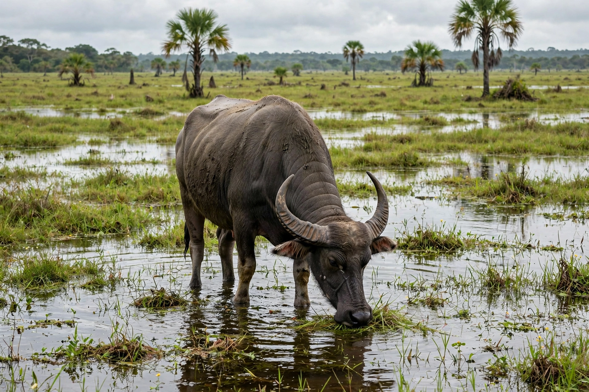

Marajó is a large coastal island in the state of Pará, Brazil, at the mouth of the Amazon River. With an area of about 40,100 square kilometres, it is the largest fluvial-marine island in the world — comparable in size to Switzerland — bounded by the Amazon to the northwest, the Pará River and Tocantins estuary to the southeast, and the Atlantic Ocean to the northeast. The island is divided among some sixteen municipalities, the largest towns including Soure, Salvaterra, and Santa Cruz do Arari, with a total population of several hundred thousand.
| Marajó | |
|---|---|
 | |
| Country | Brazil |
| State | Pará |
| Area | ~40,100 km² |
| Major towns | Soure, Salvaterra, Cachoeira do Arari |
| Noted for | Water buffalo, Marajoara ceramics |
The eastern half of Marajó is a seasonally flooded savanna used for cattle and water buffalo ranching, while the western half is forested and drained by tidal channels (furos). The island's buffalo population — said to number in the hundreds of thousands — arrived in the late 19th or early 20th century (legend has them swimming ashore from a shipwrecked vessel bound for French Guiana) and became central to local transport, labour, food (including buffalo cheese and the steak dish filé marajoara), and policing; mounted police famously patrol Soure on buffalo. Mangroves, açaí palm stands, and rich fishing grounds line the coasts.
Before European contact, Marajó was home to the sophisticated pre-Columbian Marajoara culture (c. 400–1300 CE), a chiefdom society that built earthen mounds (tesos) above the flood level and produced elaborate polychrome ceramics — funerary urns, figurines, and vessels — now considered masterpieces of Amazonian art and displayed in museums such as the Museu Paraense Emílio Goeldi in Belém. Scholar Betty Meggers famously used Marajó in arguing that Amazonian environments limited cultural complexity, a thesis later challenged by evidence of dense populations and landscape engineering.